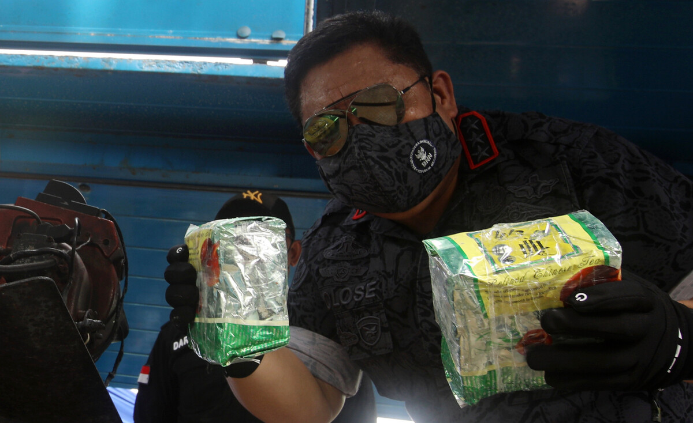

Cannabis in Indonesia
Cannabis in Indonesia is illegal. Cannabis plants, all plants of the Cannabis genus and all parts of plants including seeds, fruit, straw, and processed cannabis plants or parts of cannabis plants including marijuana resin and hash are categorized as narcotics group. Derivatives of medical and recreational cannabis are also illegal.
Cannabis use have been reported to as early as the 10th century in Java and Aceh. After Indonesian independence, the drug remained illegal, with it being the subject of a large anti-drug and anti-narcotics campaign since the 1970s. Cannabis is currently the most widely used illicit substance in Indonesia, with approximately two million users in 2014.
